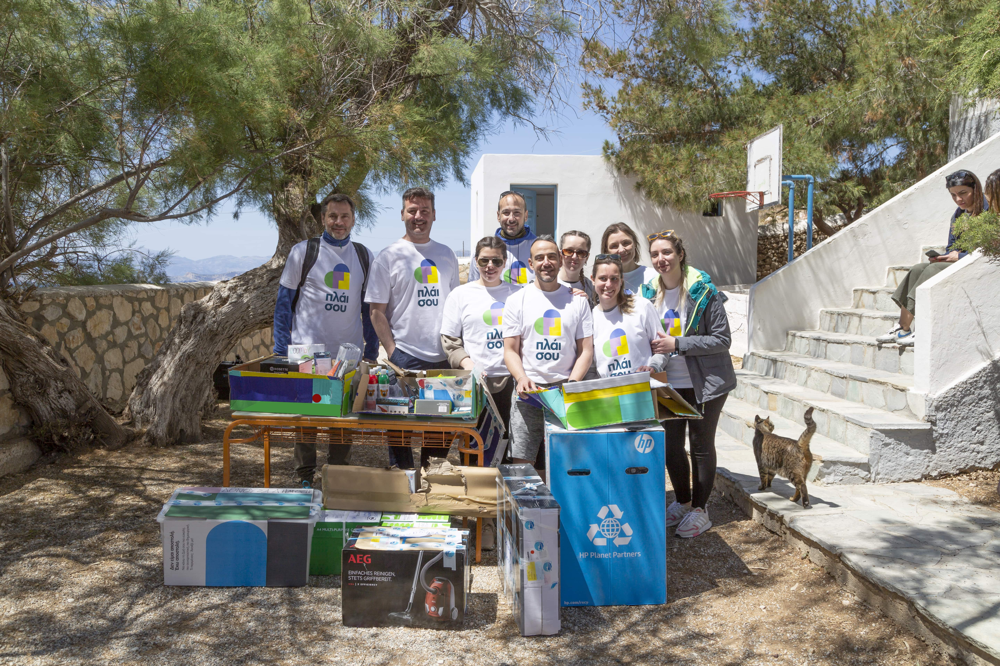
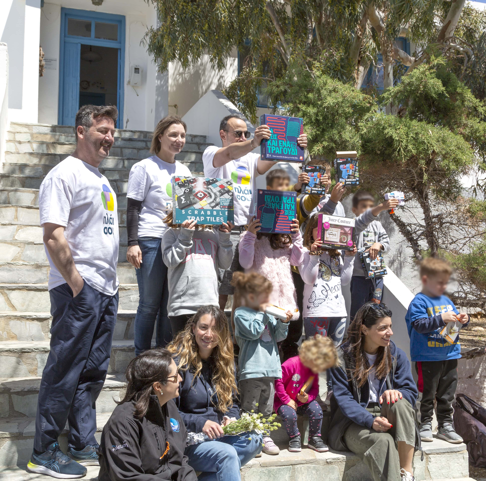
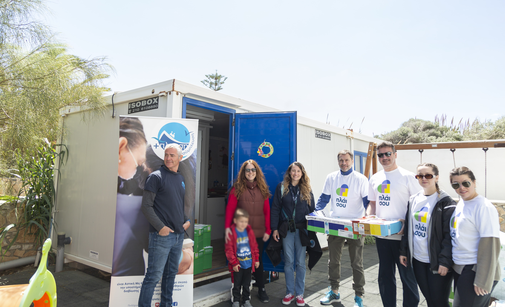
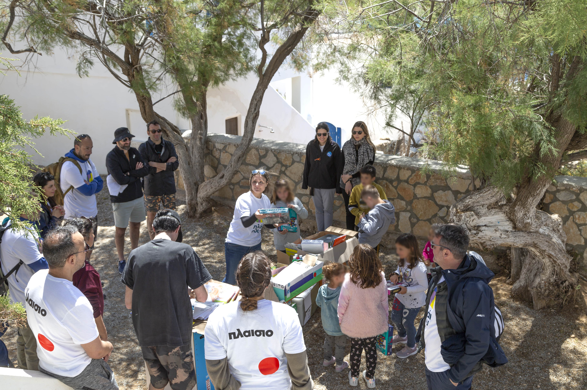

Απρίλιος 2023
«Σύμπλευση» για την ενίσχυση των ακριτικών νησιών
Το τριήμερο της Πρωτομαγιάς ήταν για εμάς ξεχωριστό, αφού 12 εθελοντές της ομάδας «Πλάι σου» ταξιδέψαμε με προορισμό τη Δονούσα για καλό σκοπό! Στόχος μας να ενισχύσουμε την πρωτοβουλία της Μ.Κ.Ο «Σύμπλευση» και να βελτιώσουμε τις συνθήκες 8 ελληνικών ακριτικών νησιών.


Έτσι, εξοπλίσαμε 12 σχολεία με σχολικά είδη, γραφική ύλη & λευκές συσκευές, και παράλληλα γνωρίσαμε τα παιδιά και τους εκπαιδευτικούς του νησιού. Η αποστολή μας συνεχίστηκε από τη Μ.Κ.Ο «Σύμπλευση» στα νησιά: Σίκινος, Αρκιοί, Λειψοί, Αγαθονήσι, Φούρνοι, Χρυσομηλιά και Ικαρία.

